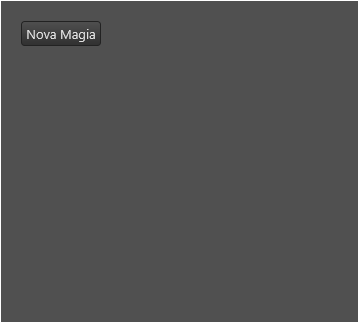
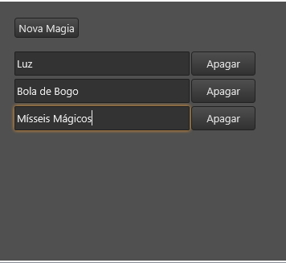

Tag recordList
Tag recordList
A tag/componente recordList é uma lista de registros na interface. Usada em conjunto com um NodeDatabase, o controle apresenta um painel na interface para cada item/nodo filho de um campo.
Observações:
- O painel dos itens é customizado pelo programador.
- O painel dos itens deve ser um form (ver Tag form) e é chamado de Template Form.
- Você vai precisar de ao menos dois arquivos de extensão ".lfm": Um onde se encontra o recordList, e outro representando o painel item.
- Cada item possui seu próprio objeto nodo, e cada painel de item é automaticamente ligado a seu escopo de dados.
Herança
O recordList possui todas as características da tag layout.
Veja:
Características
Além das características herdadas, o recordList possui também as seguintes características:
Propriedades e atributos
| Propriedade | Tipo | Valor Padrão | Descrição |
|---|---|---|---|
| field | String | \<string vazio> | Caminho de um campo no NodeDatabase. Quando associado, o recordList passa a usar este campo para salvar e apresentar os itens desta lista. Observações: Deve ser preenchido para o recordList funcionar. O campo informado se tornará um nodo no NodeDatabase Veja também: Lua Form e NodeDatabase NodeDatabase |
| templateForm | String | \<string vazio> | Identifica qual é o template form do record list, isto é, o painel que será exibido para cada item. Deve ser igual ao atributo "name" de um form contido em algum arquivo ".lfm" do projeto do plugin. Sim, você precisará de outro arquivo ".lfm" para definir fazer esta tag funcionar. |
| itemHeight | Float | 64.0 | Altura padrão de cada item do recordList. Este valor é usado quando a propriedade "height" do Template Form não for definida. |
| minQt | Integer | 0 | Define qual é a quantidade mínima de itens que este recordList deve apresentar na interface. Experimente colocar o valor 1 nesta propriedade. As vezes isto ajuda o usuário =) |
| autoHeight | Boolean | False | Quando true, o recordList automaticamente se expande/contrai na vertical para melhor visualização de seus itens. Quando false, o recordList apresenta barras de rolagens quando o conteúdo for maior que sua altura. |
| layout | Enumerado: "vertical" "horizontal" "horizontalTiles" "verticalTiles" | "vertical" | Define como são organizados visualmente os itens do recordList. "vertical' - Os itens são empilhados de forma vertical, 1 item por linha. A altura de cada painel é definido pela propriedade "height" do templateForm e a largura é ajustada para equivaler à largura do recordList. "horizontal" - Os Itens são empilhados lado a lado, de forma horizontal em apenas 1 linha. A largura de cada painel é definido pelo atributo "width" do templateForm e a altura é ajustada para equivaler à altura do recordList. A propriedade autoHeight é desativada ao usar este layout. "horizontalTiles" - Os itens são dispostos na horizontal (lado a lado), podendo quebrar de linha quando for preciso mais espaço. Tanto a altura quanto a largura de cada painel são definidos pelas propriedades "width" e "height" do templateForm. "verticalTiles" - Os itens são dispostos na vertical, podendo ocupar mais de 1 coluna quando houver espaço para isso. Tanto a altura quanto a largura de cada painel são definidos pelas propriedades "width" e "height" do templateForm. |
| selectable | Boolean | False | Indica se o recordList deve funcionar visualmente como uma lista de itens selecionáveis. |
| selectedNode | Objeto Nodo | \<\< Não há >> | Contém o Objeto Nodo do item atualmente focado/selecionado no recordList. Caso não haja seleção, contém nil. Ao atribuir um valor, o recordList procura qual de seus itens está associado ao nodo e o seleciona. Caso não encontre, a seleção será desfeita e selectedNode passará a ser nil. |
| selectedForm | Objeto Form | \<\< Não há >> | (Somente Leitura) Contém o Objeto Form do item atualmente focado/selecionado no recordList. Caso não haja seleção, contém nil. |
Métodos
| Método | Descrição |
|---|---|
| recordList:append(); | Insere um novo item ao recordList. Retorno: Caso consiga inserir um novo item, retorna o novo objeto Nodo do item inserido, senão retorna nil. |
| recordList:sort(); | Força o recordList a executar uma reordenação de seus itens. Observação: Você deve manipular o evento onCompare para definir como os itens serão ordenados. |
| recordList:scrollToNode(node) | Se a propriedade "autoHeight" for false, este método movimenta as barras de rolagem do recordList para que o painel do nodo fique visível na tela do usuário. Parâmetros: node - um objeto Nodo identificando o nodo do item que deseja tornar visível na tela do usuário. |
Eventos
| Nome do evento | Descrição |
|---|---|
| onSelect | Este evento é invocado quando a seleção do recordList muda, isto é, quando um item for selecionado ou quando nenhum item estiver selecionado. Observações: Para descobrir qual item foi selecionado, utilize as propriedades selectedNode e selectedForm Este evento é disparado mesmo quando a propriedade "selectable" for false. |
| onBeginEnumeration | Este evento é invocado quando o recordList começar a enumerar as mudanças de itens, disparando, logo a seguir, 0 ou mais eventos onItemAdded e/ou onItemRemoved. |
| onItemAdded | Evento disparado quando um item for carregado/adicionado visualmente no recordList Parâmetros: node - Objeto Nodo do item adicionado. form - Objeto Form do item adicionado. Observações: Este evento representa um item que foi enumerado visualmente na lista e não necessariamente que um novo item foi inserido nos dados salvos. Durante o carregamento dos dados, este evento é disparado para cada item carregado. |
| onItemRemoved | Evento disparado quando um item for descarregado/removido visualmente do recordList Parâmetros: node - Objeto Nodo do item removido. form - Objeto Form do item removido. Observações: Este evento representa um item que deixou de ser enumerado visualmente da lista e não necessariamente que um item foi deletado dos dados salvos. |
| onEndEnumeration | Este evento é invocado quando o recordList terminar de enumerar as mudanças de itens e não houver outro evento onItemAdded e/ou oItemRemoved para disparar a seguir. |
| onCompare | Este evento é invocado em momentos chaves para garantir a ordenação dos itens que são mostrados na interface. Quando invocado, o evento traz 2 nodos para que o programador retorne, entre os dois, qual deve aparecer antes. Parâmetros: nodeA - Objeto Nodo contendo um nodo que deve ser comparado. nodeB - Objeto Nodo contendo o outro nodo que deve ser comparado. Retorno: Retorne um número menor que 0 se "nodeA" deve ser exibido antes de "nodeB" Retorne um número maior que 0 se "nodeA" deve ser exibido depois de "nodeB" Retorne 0 se os dois são equivalentes na questão da ordem. Observação: Veja o exemplo 2 para entender melhor como este evento funciona. |
Veja Tratando eventos do Lua Form
Exemplos
Exemplo 1 - Lista simples de edits
| Arquivo “ficha.lfm” |
|---|
| \<?xml version="1.0" encoding="UTF-8"?> \<form name="frmFichaTeste"> \<button left="20" top="20" height="25" text="Nova Magia" width="80" onClick="self.rclMagias:append();"/> \<recordList name="rclMagias" field="magias" templateForm="frmItemDeMagia" left="20" top="60" width="300" autoHeight="true"/> \</form> |
| Arquivo “itemDeMagia.lfm” |
|---|
| \<?xml version="1.0" encoding="UTF-8"?> \<form name="frmItemDeMagia" height="30" margins="{top=2,bottom=2}"> \<edit align="client" field="nome" margins="{right=2}"/> \<button align="right" text="Apagar" width="80" onClick="ndb.deleteNode(sheet);"/> \</form> |
A tag recordList do arquivo "ficha.lfm" utiliza o form do arquivo"itemDeMagia.lfm" quando é definido sua propriedade "templateForm".
 
Note que existe uma instância de "frmItemDeMagia" para cada item existente.
Observação: No botão apagar foi utilizada a biblioteca "ndb" para apagar um item. Leia mais sobre em:
Detalhes que valem prestar a atenção:
- Na tag form do arquivo "itemDeMagia.lfm", a propriedade "height" foi definida. Esta é a altura do painel que se repete para cada item. Provavelmente você precisará definir um valor "height" apropriado para seu caso =).
- A variável "sheet" que foi referenciada no arquivo "itemDeMagia.lfm" representa o objeto nodo do item ligado ao painel e não da ficha.
Exemplo 2 - Adicionando uma ordenação ao Exemplo 1
Manipulando o evento OnCompare parar ordenar de forma crescente pelo atributo "nome" dos itens.
| ..... ..... \<recordList name="rclMagias" field="magias" templateForm="frmItemDeMagia" left="20" top="60" width="300" autoHeight="true"> \<event name="onCompare"> return utils.compareStringPtBr(nodeA.nome, nodeB.nome); \</event> \</recordList> ... ... |
|---|
Ordenando pelo \<custo, nome>. Isto é, ordenar pelo custo e considerar o nome em caso de empate.
| \<recordList name="rclMagias" field="magias" templateForm="frmItemDeMagia" left="20" top="60" width="300" autoHeight="true"> \<event name="onCompare">\<![CDATA[ if (nodeA.custo or 0) \< (nodeB.custo or 0) then return -1; elseif (nodeA.custo or 0) > (nodeB.custo or 0) then return 1; else return utils.compareStringPtBr(nodeA.nome, nodeB.nome); end; ]]> \</event> \</recordList> |
|---|
Created with the Personal Edition of HelpNDoc: Maximize Your PDF Protection with These Simple Steps